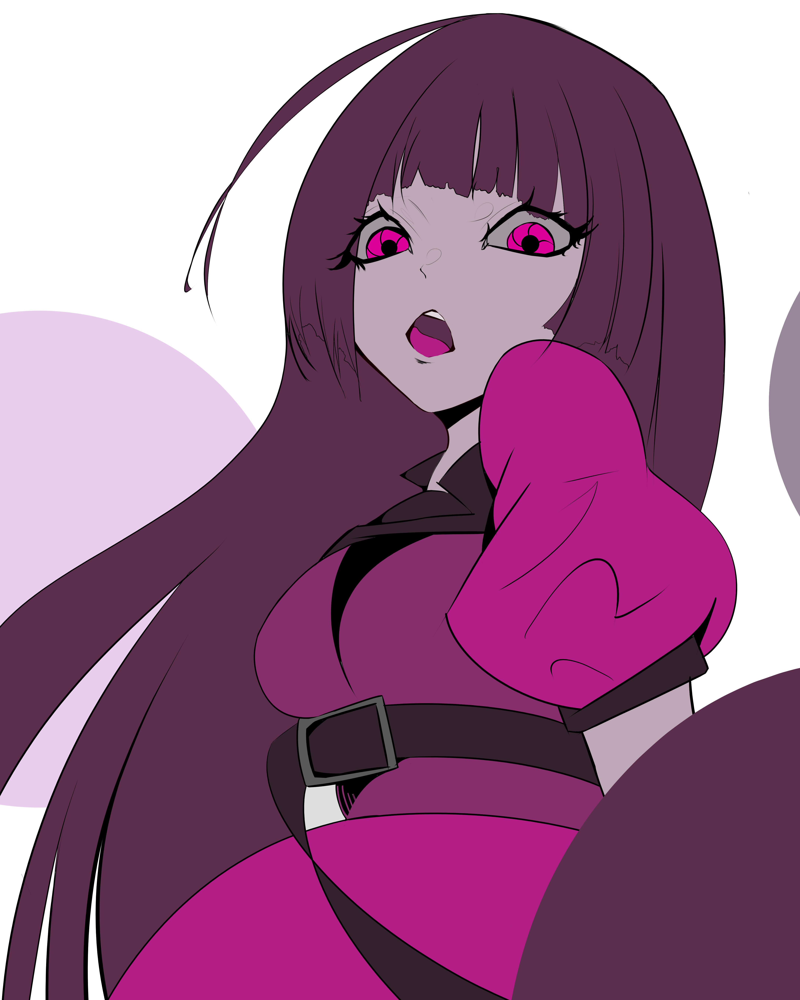

RETOUCHES
Ajustements et réparations sur mesure pour vos vêtements.
RETOUCHES
Ajustements et réparations sur mesure pour vos vêtements.
BRODERIE
Motifs personnalisés brodés à la main ou à la machine.
CREATIONS
Pièces uniques créées selon vos envies et mesures.

